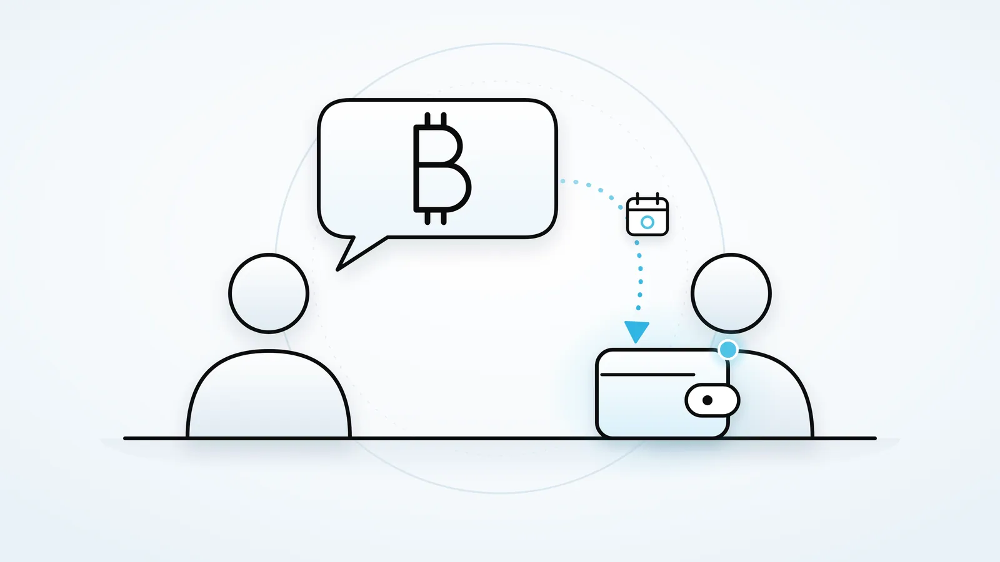
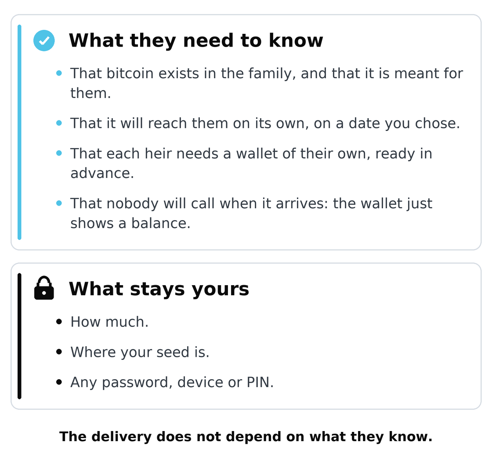

It usually happens at dinner. The conversation drifts to a relative's estate, or a friend's sudden illness, and for a second you think: I should tell them about the bitcoin. Then someone asks for the salt, and the moment passes. It has passed many times.
Should you tell your family about your bitcoin? Almost everyone who holds it has asked themselves that question, and almost everyone has postponed the answer. The reasons are good ones. But the silence has a cost that nobody puts on the balance sheet, and it is worth looking at it squarely — because the conversation is much shorter, and much safer, than it seems.
Why people stay silent, and why the silence is dangerous
There are two fears behind the silence, and both are legitimate.
The first is security. A family that knows you hold bitcoin is a family that can mention it to the wrong person, at the wrong time. Every holder has read the stories.
The second is privacy. Telling your family that you hold bitcoin feels like telling them how much, and how much is nobody's business — not even theirs.
So people say nothing. And a wallet that nobody knows about is a wallet that nobody will ever look for. The coins are not stolen and not seized; they simply stop existing for everyone except the chain. We wrote about that outcome in What Happens to Your Bitcoin When You're Gone?, and we will not repeat it here. The short version: self-custody protects you from everyone, including the people you would most want to help.
Both fears come from the same assumption — that telling your family means handing them something dangerous. It doesn't have to.
Does your spouse need to know? What to say, and what to keep to yourself
Here is the distinction that makes the conversation possible. There is what your family needs to know for the inheritance to work, and there is what exposes you. With the right setup, the two lists do not overlap.
What they need to know:
- That bitcoin exists in the family, and that it is meant for them.
- That it will reach them on its own, on a date you have set, without a lawyer, a court, or a company holding the keys.
- Who will receive it, and that each of those people needs a wallet of their own, ready in advance.
- That nobody will call them when it arrives. The wallet will simply show a balance.
What they do not need to know:
- How much.
- Where your seed is, or that it exists in any particular place.
- Any password, any device, any PIN.
With a time-locked inheritance set up through Bitcoin After Life, the delivery does not depend on what your family knows. The transaction is already signed and waiting with independent Will-Executors; on the delivery date it is broadcast like any other payment. Your spouse does not need the seed, because the seed is never part of the plan. Your children do not need the amount, because the amount is written in a transaction they will see when it confirms, and not before.
That is the whole point: you can tell them everything that matters and nothing that exposes you.

One honest aside. A lot of what you find online under this question is about hiding bitcoin from a spouse during a divorce. That is a different conversation, with a lawyer, and not the one we are having here.
More than one heir: shares, fairness, and changing your mind
Part of why people postpone the conversation is that it forces a decision. Two children, three, a partner who is not a spouse: who gets what? And once it is decided, is it carved in stone?
It is not. In the plugin, heirs and their shares are ordinary settings. Add a child, remove someone, change a percentage: the will is rebuilt the next time you close Electrum, anticipated by one day, with no on-chain transaction and no fee. Changing your mind is cheap by design. We described the mechanism in Proof of Life Without Surveillance.
That changes the shape of the decision. You are not choosing the final split for the rest of your life. You are choosing today's split, knowing you can revisit it next year. An imperfect decision that exists beats a perfect one that is still being postponed.
The heir who doesn't want to hear about Bitcoin
Most families have one. The spouse who says "I don't want to deal with that", the son who changes the subject. They are not wrong to feel that way, and the good news is that the role you need from them is small.
They need to own a wallet. They need to keep its seed phrase somewhere safe, the way they would keep a passport. And they need to know, in one sentence, that something will arrive in that wallet one day and that it is theirs.
That is all. They do not need to understand timelocks or Will-Executors. They do not need to follow the price. What to leave them in writing, and what they should do in the days after the coins arrive, is covered in The Quietest Day; a reluctant heir can read that later, or never, and the inheritance still works.
When one heir knows and the others don't
A very common situation: one child is "the technical one" and knows everything; the others know nothing. It feels efficient. It is also a quiet source of imbalance — one person holds the map, and the others will one day have to trust that the map was read fairly.
The fix is not to teach everyone the protocol. It is to make sure everyone knows the same two things: that the inheritance exists, and that it reaches each of them directly, in their own wallet, without passing through anyone's hands. The technical sibling can help the others set up a wallet. They should never be the only one who knows there is something to set up for.
What to say tonight
You do not need a presentation. You need one sentence, and it can be this one:
"If something happens to me, there is bitcoin that will reach you on its own. You don't have to find anything or ask anyone. You just need a wallet of your own, and I'll help you set it up."
Then stop. The amount can stay yours. The seed can stay where it is. The questions will come, over weeks, at their own pace, and each one is easier than the first sentence was.
And if tonight is not the night either, the mechanism does not mind. A will set up through Bitcoin After Life keeps working whether or not the conversation has happened. But the people at the table will have an easier day, one day, if it has.
Bitcoin After Life is open source and Bitcoin-only. Explore the plugin and the server on Gitea and read the full manual at bitcoin-after.life/docs.